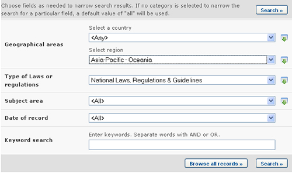

URL: http://bch.cbd.int/database/laws/
En el marco del Protocolo de Cartagena, las Partes tienen la responsabilidad de que la información sobre sus leyes y regulaciones pertinentes esté disponible a través del CIISB.
La página de búsqueda de información acerca de Leyes y Regulaciones puede ser obtenida en el vínculo de Búsqueda de Información (Finding Information) en el menú desplegable en la barra de navegación, o en el vínculo en la barra lateral izquierda en la página Búsqueda de Información o en el vínculo de Leyes y Regulaciones en el texto de la misma página.
Esta base de datos les permite a los usuarios buscar por:
-
Leyes Nacionales;
-
Regulaciones Nacionales;
-
Directrices Nacionales;
-
Acuerdos Bilaterales;
-
Acuerdos Multilaterales; y
-
Acuerdos Regionales.
En la página Búsqueda de Leyes y Regulaciones hay varios cuadros de criterios de búsqueda:
-
País: Campo de lista de selección para seleccionar un país.
-
Región: Campo de lista de selección para seleccionar una región.
-
Tipo de leyes o reglamentaciones: Campo de lista de selección para acotar los resultados a ciertos tipos de leyes y regulaciones.
-
Área temática: Campo de lista de selección para limitar los resultados a ciertas áreas temáticas
-
Fecha del Registro: Campo de fecha para acotar la búsqueda a un cierto intervalo de tiempo.
-
Búsqueda por Palabra clave: Palabra clave para refinar resultados según palabras claves.
Ver “cómo usar las páginas de búsqueda” para aprender sobre tipos de campos y su operación.
Ejemplo. Un usuario necesita encontrar leyes y regulaciones nacionales en la región de Oceanía. Seleccione Asia-Pacifico-Oceanía en el cuadro Seleccione grupo de país. Seleccione Leyes, regulaciones y directrices nacionales en el cuadro Tipo de leyes o regulaciones. Haga clic en Los resultados de la búsqueda se muestran y el usuario puede seleccionar cualquier registro para estudiar la documentación para países específicos en la región.

Esta imagen fue tomada en Febrero del 2010 con el único propósito de proveer un ejemplo sobre el uso del CIISB.